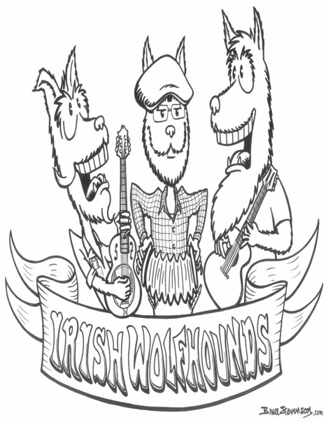

James Olin Oden - Music
James Olin Oden - About
<a href="http://jamesolinoden.bandcamp.com/album/deeper-dance">Deeper Dance by James Olin Oden</a>
Liner Notes
Cover Art Artist:
Jenn Hales
<a href="http://jamesolinoden.bandcamp.com/album/the-craic-is-free"> The Craic is Free by James Olin Oden </a>
Liner Notes
Cover Art Artist:
Sandra McEwen
The story behind the cover art
Indy Week Review of The Craic is Free
<a href="http://jamesolinoden.bandcamp.com/album/samhains-march-a-winter-journey"> Samhain's March: A Winter Journey by James Olin Oden </a>
Liner Notes
Cover Art Artist:
Jay Pfeil

The Irish Wolfhounds was a band I was part of years ago. We played Irish and Scottish music and had a lot fun. This was our demo album.
<a href="http://jamesolinoden.bandcamp.com/album/the-irish-wolfhounds">The Irish Wolfhounds by James Olin Oden</a>